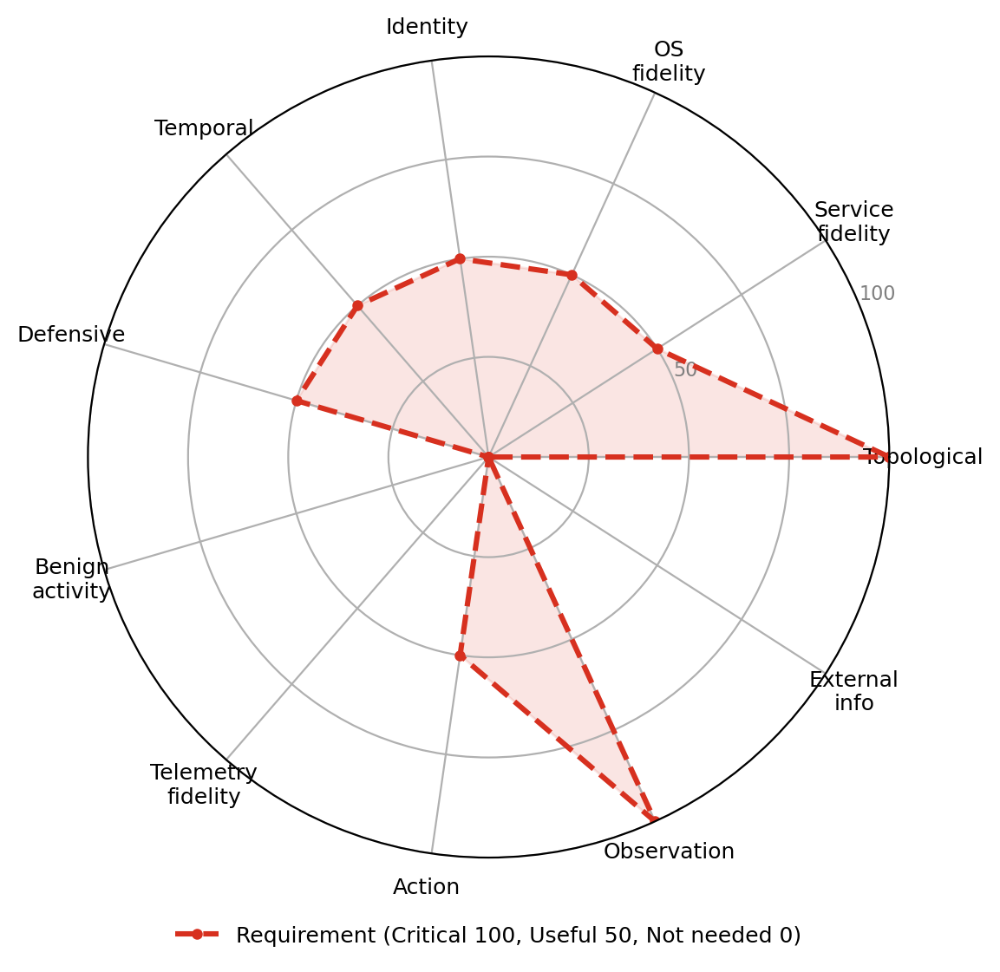

UC-S2 · Security architecture evaluation
A system-level objective that asks whether a given network configuration is robust against automated attack, rather than how a particular agent performs. By running attacks across different topologies and policies and comparing the outcomes, one measures time-to-compromise under each configuration and identifies the weakest paths an attacker would take. Because the question is about the structure (segmentation, reachability, and policy), topology and observation are the dominant dimensions, and an abstract simulator with a faithful network model can produce valid comparisons here even without real-software fidelity. It is the system-level analogue of worm-spread analysis (UC-A3).

Dimension requirement profile
| Dimension | Requirement |
|---|---|
| Topological realism | Critical |
| Service fidelity | Useful |
| OS fidelity | Useful |
| Identity realism | Useful |
| Temporal dynamics | Useful |
| Defensive realism | Useful |
| Benign activity realism | Not needed |
| Telemetry fidelity | Not needed |
| Action realism | Useful |
| Observation realism | Critical |
| External information ecosystem | Not needed |